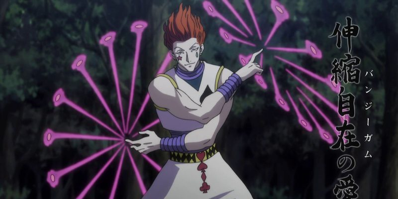

Bungee Gum & Texture Surprise
A Transmuter's aura given the properties of rubber and gum, it sticks to anything, stretches impossibly far, and snaps back exactly when you tell it to. It slingshots its user across battlefields, snares the unwary mid-stride, and lies cheerfully about what it is. And when its user dies, the gum refuses to accept it: it squeezes his heart until it beats again.

Bungee Gum & Texture Surprise
"Bungee Gum has the properties of both rubber and gum." Then you find out what that means.
Feature map
Level-by-level features
Field notes. Subject: the transmuter who weaponized a joke. Three truths govern him. First, the gum has the properties of both rubber and gum, it sticks to anything, stretches impossibly far, and snaps back exactly when he tells it to: adhesion, extension, and obedience, all in pink. Second, the trick is the technique’s honesty: Texture Surprise is a separate little lie, and the strands are a sense organ, a slingshot, a tripwire, a gag, one material, endless cruelties. Third, the gum loves its master more than death does: prosthetics knit the dying body, and if he dies, the strands squeeze his heart until it beats again. Mark the joker’s economy: he pays 1 CE a strand, and the whole battlefield becomes his playground.
Bungee Gum
Action · 1 CE · CE-ability attack vs a creature, object, or surface within 60 ft; on hit: strand sticks (up to 3). Strands stretch 60 ft; contract/extend/detach at will (no action). Bonus action: contract a strand anchored to something heavier: pull yourself 30 ft (no opportunity attacks) or pull a stuck creature 15 ft (Str save negates).
The founding strand.Sticky. Stretchy. Entirely under your control.
Texture Surprise
Action · 1 CE · Touch a surface or object: change its apparent texture until dismissed or long rest. Investigation vs your CE save DC sees through; touch alone doesn't betray it.
The second trick, a separate little lie: the gum learns to lie about what it is. Stone, floor, wallpaper, it only has to fool the eyes, and it does.Gum becomes stone, a pit mouth becomes solid floor, your skin becomes wallpaper. It only has to fool the eyes.
Slingshot
Passive · Slingshot movement 90 ft; fling a willing creature or object up to 60 ft along a strand (same bonus action); flung object: improvised ranged attack, 2d8 bludgeoning on hit. Strand anchored overhead: no falling damage.
The gum learns to fly. Anchor overhead and gravity becomes a suggestion.Gravity is a suggestion.
Web of Strings
Passive · Up to 6 strands; feel vibrations on any strand within 120 ft (size, number, direction); creatures touching the web can't surprise you. Bonus action: contract any number of strands.
The web becomes a sense organ.The whole battlefield, on a string.
Prosthetic Gum
Reaction · 3 CE · When damage would drop you to 0 HP: drop to 1 HP instead. 1 CE: grow a gum prosthetic (hand, foot, eye); restores function for 24 hours.
The gum replaces what the body lost: reaction and 3 CE when damage would drop him, and he falls to 1 instead, or 1 CE to grow a working hand, foot, or eye of pink aura for a day.Gum replaces what the body lost. When damage would reduce you to 0 hit points, use your reaction and spend 3 CE: the gum knits you together mid-blow and you drop to 1 hit point instead. You can also spend 1 CE to grow a gum prosthetic, a working hand, foot, or eye of pink aura, restoring lost function for 24 hours. He walked out of that fight on feet made of gum.
Post-Mortem Heartbeat
Once per long rest · If you die (body not destroyed): return to life at half max HP after 1 minute.
The gum’s final devotion: the strands refuse.Strands tighten around your heart and lungs and squeeze them back to work. Anyone watching sees the corpse twitch as pink strands draw taut. Death is just another thing to stick to.
Maximum and Domain.
Capstone material
Maximum: Gum Storm
Action · 5 CE · 1 minute: gum erupts within 60 ft; hostiles Str save vs CE save DC or restrained (repeat at end of each turn). Bonus action: yank a restrained creature 20 ft. Difficult terrain for everyone but you.
The pinnacle: action, 5 CE, and for one minute gum erupts from every surface within sixty feet. Hostiles save or are restrained, repeating at their turns’ ends, and his bonus action yanks any restrained creature twenty feet. Difficult terrain for everyone but him.As an action, spend 5 CE: for 1 minute, gum erupts from every surface within 60 feet of you. Hostile creatures in the area must succeed on a Strength saving throw against your CE save DC or be restrained by strands (they repeat the save at the end of each of their turns). As a bonus action, contract strands on any restrained creature and yank it 20 feet in any direction. The area is difficult terrain for everyone but you. Everything is gum now.
Domain Expansion: Playground of Strings
Domain · Full turn · 20 CE · 120 ft, 2 min, 800 clash, 5-round burnout. Sure-hit: every hostile auto-stuck, no roll/save; strands can't be detached. Bonus action: pull a stuck creature 20 ft (Str save negates).
Pink strands web the world, glistening, endless, strung from nothing to nothing in a geometry that delights in itself. The ground gives slightly underfoot, tacky and warm, and every surface bears the faint sheen of something sweet and inescapable. It smells, impossibly, of bubblegum and menace.
The playground closes, and the sure-hit is the sticking itself.Nobody leaves the playground. Your slingshot movement costs nothing extra inside your own domain.
Five feats, stuck on you.
Bungee Gum teaches five applications beyond the strands themselves. Each is optional, and you must meet its listed prerequisite before taking it.
Tripwire
The patient strand.Stretch a strand across a doorway, corridor, or trail and leave it: the instant anything crosses it you know its size and number, and it can't surprise you. The strand holds until detached, no concentration required.
Gum Gag
The silencing strand.Contract a strand across a stuck creature's mouth as part of the same bonus action you use to pull it: it can't speak or supply verbal components until it breaks free (an action, Strength check vs. your CE save DC). Quiet is a kind of winning.
False Floor
The lie, weaponized.Texture Surprise can disguise a pit, snare, or doorway as solid ground or blank wall. The first creature to cross it must succeed on an Investigation check against your CE save DC or fall in, or walk straight through a door it never saw.
Card Return
The gambler’s old habit.A strand left on a thrown weapon or object lets you recall it to your hand as a bonus action from up to 120 feet away, arcing back along the strand. Hisoka's cards always come back.
Bungee Parachute
The falling clause.Anchor a strand to anything above you, a ceiling, a branch, the shimmer in the air is enough, and descend any distance safely. As a reaction, you can arrest another falling creature within 60 feet the same way.
Edge cases and shared systems.
Campaign canon notes